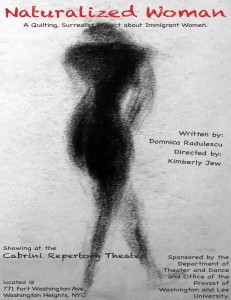

Professor of Romance Languages Domnica Radulescu joined the Washington and Lee faculty in 1992. She has since taught courses on Italian Renaissance literature and French language and literature, and co-founded the Washington and Lee Women’s and Gender Studies Program. Aside from her teaching responsibilities, Professor Radulescu has been involved in (either written or helped edit) more than twenty scholarly articles and nine books or essay collections. She is perhaps best known for her two published novels, Train to Trieste (2008, published in twelve languages), and Black Sea Twilight (2010) and has just completed her third, Country of Red Azaleas, as well as her tenth scholarly book, Theater of War and Exile from Eastern Europe and Israel. She’s moving towards books twelve and thirteen.
This deeply varied and impressive academic record reflects the diverse background that is Professor Radulescu’s early history. After fleeing Romania in 1983 as a political refugee, she received her Bachelor of Arts in English from Loyola University in Chicago along with both an M.A. in comparative literature and a Ph. D. in Romance languages and literatures from the University of Chicago. Her Eastern European background influenced her decision to address Eastern European women in her literature and to focus on theater in both French and Italian languages.
{kind=link}
As evidence of both her talent and transnational stories, her first novel, Train to Trieste, has been translated into nine different languages and was the winner of the 2009 Library of Virginia Fiction Award. Professor Radulescu’s other accolades include winning the 2011 Outstanding Faculty Award from the State Council of Higher Education for Virginia (SCHEV). The award recognizes “superior accomplishments in teaching, research, and public service, ” and Professor Radulescu’s many accomplishments both as a professor and a writer certainly embody this standard.
Further information about the author can be found in this audio link to a BBC interview conducted in 2009:
http://www2.wlu.edu/x34310.xml
Shenandoah’s interview with Professor Radulescu highlights her experiences as a scholar and writer and offers a provoking insight into her masterful creations and understanding of multiple cultures.
Shenandoah: How has the W&L student body changed since you arrived on campus in 1992?
Domnica Radulescu: It has diversified more in terms of racial, ethnic and economic status categories. Compared to other schools Washington and Lee still has to make some important strides toward authentic diversification at all levels, but compared to itself it has opened up quite a bit since I first arrived on campus.
S: Your novels have been set across Europe and in the United States; I often hear that settings should be used as characters, having certain traits the complement the goal of the work. What traits might you say your Eastern European settings have? How do they differ from some traits of an American setting?
DR: I try to imbue my European settings with a sense of history and the magic of what is generally known as the old world. I work at evoking settings in which nature and architecture complement each other, urban settings with touches of natural beauty as for instance a city street lined with fragrant linden trees and natural settings marked by the human touch and history as for instance a view of the brooding Carpathian Mountains with a medieval cathedral in the middle. The European settings are in my flesh and blood as I grew up among them. The American settings are always surprising and fascinating to me as I keep discovering them and trying to appropriate them as my own. Since the American settings are viewed through the eyes and experience of immigrants they are harsher and edgier and often presented with both a sense of distance and nostalgia for the lost spaces of the characters. Indeed often my settings are almost like characters in themselves and offer much more than the background for the unfolding of the action: they are interconnected with the life and the psychology of the characters, they offer refuge and are an intrinsic part of the action. For instance, the Carpathian Mountains offer refuge and consolation to the lovers in Train to Trieste as they are haunted by secret police and weighed down by an oppressive regime. The Black Sea becomes part of the action as the lovers in Black Sea Twilight rescue a French tourist from its tumultuous waves who in turn is going to have a crucial role in the unfolding of the plot. The creation of a specific sense of place is fundamental to the creation of my novels. Readers have often told me that they were transported to the spaces I was describing when reading my novels. I believe that means I am achieving at least one of the goals of my creative endeavors.
{kind=link}
S: How do you combine your studies of comparative linguistics with Women’s and Gender studies? How are your studies reflected in your writing?
DR: There is a continuous and fluid dialogue between my scholarly endeavors and my fictional work. For instance, in terms of comparative linguistics, my novels and plays display a wide range of linguistic registers from poetic to humorous to realistic to dreamy and they often play with language as well as integrate words and expressions from other languages. In terms of my experience with women’s and gender studies, my fictional works all portray strong female protagonists that own their destinies, tell their own stories, and have strong and memorable voices. They also illustrate the wide range of the female experience in the world from coming into oneself as a young woman to professional fulfillment or struggle, to creativity, to motherhood, sexuality, birth, friendship and female solidarity, aging, grief, and above all a larger than life laugh at the tragicomedy that is life.
S: To what extent does your study of languages affect your English writing style?
DR: Quite significantly. I believe that because of my life long study and teaching of languages as well as due to the fact I write most of my fictional works in English, which is not my native language, I have a particular sensitivity to the nuances of words, to the sounds, rhythm and music in language, to the ironies or poetry hidden in various combinations of words, to the great potential of language to transport us to mysterious worlds, to bring us to heights of joy or depths of sadness, or to incite us to action. I believe that because I am an outsider to the English language I have the irreverent courage to play with the English language in ways that maybe native speakers would not have the willingness to do. I also often try to bring into my fiction the flavor of some of the other languages I speak and love: some of the earthiness and humor of my native language Romanian, some of the sexy lyricism of French, some of the delicious melodiousness of Italian. The English language is a generous language that has great potential and powers and is a Protean language with great potential for transformation and playfulness.
S: Can you outline several differences in your process in writing a play as opposed to a novel?
DR: For me, writing a novel is like building a house: you have to create a foundation, walls and structures that hold it together, windows that are open onto the world and make sure that all the parts are interconnected so that the house doesn’t fall down. Characters, plot development, details of place, time, atmosphere, geography, psychology, philosophical ideas all have to be tied in an architecture that makes sense and is cohesive as is aesthetically engaging. Sometimes it is agonizing and despairing, and things do crumble and then you have to go back and rebuild parts, dismantle others, until it all holds in a seamless yet delicate balance. Writing a play for me is, on the contrary like playing with blocks, it is very much the opposite of writing a novel: playful, light even when the themes or ideas may be difficult or the characters poised on the line between the tragic and the comic, and it gives me a great sense of creative freedom. I can make the most outrageous structures with my colored blocks which are words and images. The fact that I can allow the characters to talk in their own voices, act and play often in wildly contrasting ways, confront one another or reflect one another gives me the sense of a magical world that has a life of its own.
{kind=link}
S: Having described some of those differences, is there a genre that you prefer, or does your choice depend on subject matter? Or on something else?
DR: I like each of them equally but in different ways. I am basically a story teller, and I love telling a good story and building a beautiful house for it. The narrative genre gives me the sense of great power. James Joyce said that the narrator is “like God in creation.” There is something true about that and the sense of a certain omnipotence of creating a cohesive and functioning world is exhilarating. On the other hand, I have worked in the theater for my entire adult life, either as actor, director, teacher or scholar of theater and I believe I have a sense of timing, voice, contrast and tension which is at the core of theater. I feel great freedom in the writing of a play as I give voice to a wide array of points of view and personalities. I feel I can experiment and there is no limit to how far I can take my imagination in the creation of a play. In writing a novel I feel I have to perform a balancing act between delving inside my creative imagination and reigning it in so that the story can shine through.
S: After having lived in the US for so long, do you identify with American culture? With Washington and Lee culture?
DR: I identify and appreciate many aspects of American culture as America is my home. I appreciate its sense of openness, wildness and freedom, its great human diversity, American humor and the puzzling balance between fierce individualism and the working of communities, its wide expanses of land, its music, and its highways.
There are aspects of Washington and Lee culture that I identify with and others that I don’t. I appreciate some aspects of its developing artistic and intellectual culture, and its slowly growing counterculture, small as that may be. I do not identify with or appreciate the Greek culture, the masculinist culture or the cult of Robert E. Lee. The last one in particular is very alien and alienating to me. I do feel quite close to the students taken individually, and I appreciate the university’s many resources. I love the view of the town seen from the Colonnade at sunset.
S: Shenandoah has made a complete transition to an online format. How do you think that changes the way the published pieces are read and perceived?
DR: Just as anything else that is changing from paper format to electronic: something is to be gained and something is lost: that which is gained in accessibility and circulation is lost in the precious physicality of the paper object. Some people still think that electronic journals are less prestigious but more and more important publications have either moved to or started as electronic journal in the first place. In a way the electronic format offers more freedom in layout, illustrations and its success depends how the journal is being publicized and connected to various sources online. I personally find it sort of fun and really convenient to read journals online while I still love holding a real book in my hands.
S: You’ve incorporated both autobiographical and fictional elements into your works; how do you avoid injecting too much of yourself into the characters? How do you ensure they are separate entities rather than reflections of yourself?
DR: I don’t really and I don’t worry about it. There is always an organic integration of my personal experiences with my imagination, research and other peoples’ stories into a holistic entity. To me art is an awakening or it leads to an awakening. In order for that awakening to happen it needs to emerge from the depths of the artist’s experience, soul, creative imagination and then the material or the story that emerges from those places needs to be transformed in the furnace of that imagination into a work that others can connect to, identify with or be moved by. Whether a work is autobiographical or not, or somewhat autobiographical and somewhat fictional, whether it is “a true story” or not, is irrelevant to me. What is relevant to me is that a reader who picks up one of my novels discovers something in it that she/he can connect with at a deep level, that she/he experiences that awakening and discovers something new about the world, the human condition and themselves. Then it is a true story.
{kind=link}
S: If you had to choose one language in which to read, which would you choose?
DR: I wouldn’t. I don’t want to make that choice, because I love to read in many languages and discover the various universes of thought that are contained in those languages: French, English, Italian, Romanian, or Spanish. But if let’s say I was forced to choose only one language to read in I think it would be English. But I would really miss the other languages and probably translate in my mind into one of the other languages I love as I went on with the reading in English.
Radulescu, Domnica. Train to Trieste. New York: Alfred A. Knopf, 2008. Print.
Radulescu, Domnica. Black Sea Twilight. London: Doubleday, 2010. Print.